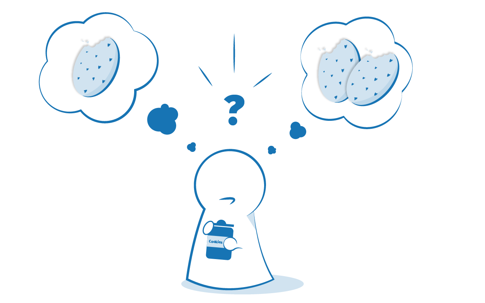

In any programming language, the code needs to make decisions and carry out actions accordingly depending on different inputs. For example, in a game, if the player's number of lives is 0, then it's game over. In a weather app, if it is being looked at in the morning, show a sunrise graphic; show stars and a moon if it is nighttime. In this article, we'll explore how so-called conditional statements work in JavaScript.
| Prerequisites: | Basic computer literacy, a basic understanding of HTML and CSS, JavaScript first steps. |
|---|---|
| Objective: | To understand how to use conditional structures in JavaScript. |
Human beings (and other animals) make decisions all the time that affect their lives, from small ("should I eat one cookie or two?") to large ("should I stay in my home country and work on my father's farm, or should I move to America and study astrophysics?")
Conditional statements allow us to represent such decision making in JavaScript, from the choice that must be made (for example, "one cookie or two"), to the resulting outcome of those choices (perhaps the outcome of "ate one cookie" might be "still felt hungry", and the outcome of "ate two cookies" might be "felt full, but mom scolded me for eating all the cookies".)

Let's look at by far the most common type of conditional statement you'll use in JavaScript — the humble if...else statement.
Basic if...else syntax looks like the following in {{glossary("pseudocode")}}:
if (condition) {
code to run if condition is true
} else {
run some other code instead
}
Here we've got:
if followed by some parentheses.true or false.true.else.true — or in other words, the condition is false.This code is pretty human-readable — it is saying "if the condition returns true, run code A, else run code B"
You should note that you don't have to include the else and the second curly brace block — the following is also perfectly legal code:
if (condition) {
code to run if condition is true
}
run some other code
However, you need to be careful here — in this case, the second block of code is not controlled by the conditional statement, so it always runs, regardless of whether the condition returns true or false. This is not necessarily a bad thing, but it might not be what you want — often you want to run one block of code or the other, not both.
As a final point, you may sometimes see if...else statements written without the curly braces, in the following shorthand style:
if (condition) code to run if condition is true else run some other code instead
This is perfectly valid code, but using it is not recommended — it is much easier to read the code and work out what is going on if you use the curly braces to delimit the blocks of code, and use multiple lines and indentation.
To understand this syntax better, let's consider a real example. Imagine a child being asked for help with a chore by their mother or father. The parent might say "Hey sweetheart! If you help me by going and doing the shopping, I'll give you some extra allowance so you can afford that toy you wanted." In JavaScript, we could represent this like so:
let shoppingDone = false;
let childsAllowance;
if (shoppingDone === true) {
childsAllowance = 10;
} else {
childsAllowance = 5;
}
This code as shown always results in the shoppingDone variable returning false, meaning disappointment for our poor child. It'd be up to us to provide a mechanism for the parent to set the shoppingDone variable to true if the child did the shopping.
Note: You can see a more complete version of this example on GitHub (also see it running live.)
The last example provided us with two choices, or outcomes — but what if we want more than two?
There is a way to chain on extra choices/outcomes to your if...else — using else if. Each extra choice requires an additional block to put in between if() { ... } and else { ... } — check out the following more involved example, which could be part of a simple weather forecast application:
<label for="weather">Select the weather type today: </label> <select id="weather"> <option value="">--Make a choice--</option> <option value="sunny">Sunny</option> <option value="rainy">Rainy</option> <option value="snowing">Snowing</option> <option value="overcast">Overcast</option> </select> <p></p>
const select = document.querySelector('select');
const para = document.querySelector('p');
select.addEventListener('change', setWeather);
function setWeather() {
const choice = select.value;
if (choice === 'sunny') {
para.textContent = 'It is nice and sunny outside today. Wear shorts! Go to the beach, or the park, and get an ice cream.';
} else if (choice === 'rainy') {
para.textContent = 'Rain is falling outside; take a rain coat and an umbrella, and don\'t stay out for too long.';
} else if (choice === 'snowing') {
para.textContent = 'The snow is coming down — it is freezing! Best to stay in with a cup of hot chocolate, or go build a snowman.';
} else if (choice === 'overcast') {
para.textContent = 'It isn\'t raining, but the sky is grey and gloomy; it could turn any minute, so take a rain coat just in case.';
} else {
para.textContent = '';
}
}
{{ EmbedLiveSample('else_if', '100%', 100, "", "", "hide-codepen-jsfiddle") }}
<select> element so that when its value is changed, the setWeather() function is run.choice to the current value selected in the <select> element. We then use a conditional statement to show different text inside the paragraph depending on what the value of choice is. Notice how all the conditions are tested in else if() {...} blocks, except for the first one, which is tested in an if() {...} block.else {...} block, is basically a "last resort" option — the code inside it will be run if none of the conditions are true. In this case, it serves to empty the text out of the paragraph if nothing is selected, for example, if a user decides to re-select the "--Make a choice--" placeholder option shown at the beginning.Note: You can also find this example on GitHub (see it running live on there also.)
Comparison operators are used to test the conditions inside our conditional statements. We first looked at comparison operators back in our Basic math in JavaScript — numbers and operators article. Our choices are:
=== and !== — test if one value is identical to, or not identical to, another.< and > — test if one value is less than or greater than another.<= and >= — test if one value is less than or equal to, or greater than or equal to, another.Note: Review the material at the previous link if you want to refresh your memories on these.
We wanted to make a special mention of testing boolean (true/false) values, and a common pattern you'll come across again and again. Any value that is not false, undefined, null, 0, NaN, or an empty string ('') actually returns true when tested as a conditional statement, therefore you can use a variable name on its own to test whether it is true, or even that it exists (that is, it is not undefined.) So for example:
let cheese = 'Cheddar';
if (cheese) {
console.log('Yay! Cheese available for making cheese on toast.');
} else {
console.log('No cheese on toast for you today.');
}
And, returning to our previous example about the child doing a chore for their parent, you could write it like this:
let shoppingDone = false;
let childsAllowance;
if (shoppingDone) { // don't need to explicitly specify '=== true'
childsAllowance = 10;
} else {
childsAllowance = 5;
}
It is perfectly OK to put one if...else statement inside another one — to nest them. For example, we could update our weather forecast application to show a further set of choices depending on what the temperature is:
if (choice === 'sunny') {
if (temperature < 86) {
para.textContent = 'It is ' + temperature + ' degrees outside — nice and sunny. Let\'s go out to the beach, or the park, and get an ice cream.';
} else if (temperature >= 86) {
para.textContent = 'It is ' + temperature + ' degrees outside — REALLY HOT! If you want to go outside, make sure to put some sunscreen on.';
}
}
Even though the code all works together, each if...else statement works completely independently of the other one.
If you want to test multiple conditions without writing nested if...else statements, logical operators can help you. When used in conditions, the first two do the following:
&& — AND; allows you to chain together two or more expressions so that all of them have to individually evaluate to true for the whole expression to return true.|| — OR; allows you to chain together two or more expressions so that one or more of them have to individually evaluate to true for the whole expression to return true.To give you an AND example, the previous example snippet can be rewritten to this:
if (choice === 'sunny' && temperature < 86) {
para.textContent = 'It is ' + temperature + ' degrees outside — nice and sunny. Let\'s go out to the beach, or the park, and get an ice cream.';
} else if (choice === 'sunny' && temperature >= 86) {
para.textContent = 'It is ' + temperature + ' degrees outside — REALLY HOT! If you want to go outside, make sure to put some sunscreen on.';
}
So for example, the first code block will only be run if choice === 'sunny' and temperature < 86 return true.
Let's look at a quick OR example:
if (iceCreamVanOutside || houseStatus === 'on fire') {
console.log('You should leave the house quickly.');
} else {
console.log('Probably should just stay in then.');
}
The last type of logical operator, NOT, expressed by the ! operator, can be used to negate an expression. Let's combine it with OR in the above example:
if (!(iceCreamVanOutside || houseStatus === 'on fire')) {
console.log('Probably should just stay in then.');
} else {
console.log('You should leave the house quickly.');
}
In this snippet, if the OR statement returns true, the NOT operator will negate it so that the overall expression returns false.
You can combine as many logical statements together as you want, in whatever structure. The following example executes the code inside only if both OR statements return true, meaning that the overall AND statement will return true:
if ((x === 5 || y > 3 || z <= 10) && (loggedIn || userName === 'Steve')) {
// run the code
}
A common mistake when using the logical OR operator in conditional statements is to try to state the variable whose value you are checking once, and then give a list of values it could be to return true, separated by || (OR) operators. For example:
if (x === 5 || 7 || 10 || 20) {
// run my code
}
In this case the condition inside if(...) will always evaluate to true since 7 (or any other non-zero value) always evaluates to true. This condition is actually saying "if x equals 5, or 7 is true — which it always is". This is logically not what we want! To make this work you've got to specify a complete test either side of each OR operator:
if (x === 5 || x === 7 || x === 10 ||x === 20) {
// run my code
}
if...else statements do the job of enabling conditional code well, but they are not without their downsides. They are mainly good for cases where you've got a couple of choices, and each one requires a reasonable amount of code to be run, and/or the conditions are complex (for example, multiple logical operators). For cases where you just want to set a variable to a certain choice of value or print out a particular statement depending on a condition, the syntax can be a bit cumbersome, especially if you've got a large number of choices.
In such a case, switch statements are your friend — they take a single expression/value as an input, and then look through a number of choices until they find one that matches that value, executing the corresponding code that goes along with it. Here's some more pseudocode, to give you an idea:
switch (expression) {
case choice1:
run this code
break;
case choice2:
run this code instead
break;
// include as many cases as you like
default:
actually, just run this code
}
Here we've got:
switch, followed by a set of parentheses.case, followed by a choice that the expression/value could be, followed by a colon.break statement, followed by a semi-colon. If the previous choice matches the expression/value, the browser stops executing the code block here, and moves on to any code that appears below the switch statement.default, followed by exactly the same code pattern as one of the cases (bullets 3–5), except that default does not have a choice after it, and you don't need to break statement as there is nothing to run after this in the block anyway. This is the default option that runs if none of the choices match.Note: You don't have to include the default section — you can safely omit it if there is no chance that the expression could end up equaling an unknown value. If there is a chance of this, however, you need to include it to handle unknown cases.
Let's have a look at a real example — we'll rewrite our weather forecast application to use a switch statement instead:
<label for="weather">Select the weather type today: </label> <select id="weather"> <option value="">--Make a choice--</option> <option value="sunny">Sunny</option> <option value="rainy">Rainy</option> <option value="snowing">Snowing</option> <option value="overcast">Overcast</option> </select> <p></p>
const select = document.querySelector('select');
const para = document.querySelector('p');
select.addEventListener('change', setWeather);
function setWeather() {
const choice = select.value;
switch (choice) {
case 'sunny':
para.textContent = 'It is nice and sunny outside today. Wear shorts! Go to the beach, or the park, and get an ice cream.';
break;
case 'rainy':
para.textContent = 'Rain is falling outside; take a rain coat and an umbrella, and don\'t stay out for too long.';
break;
case 'snowing':
para.textContent = 'The snow is coming down — it is freezing! Best to stay in with a cup of hot chocolate, or go build a snowman.';
break;
case 'overcast':
para.textContent = 'It isn\'t raining, but the sky is grey and gloomy; it could turn any minute, so take a rain coat just in case.';
break;
default:
para.textContent = '';
}
}
{{ EmbedLiveSample('A_switch_example', '100%', 100, "", "", "hide-codepen-jsfiddle") }}
Note: You can also find this example on GitHub (see it running live on there also.)
There is one final bit of syntax we want to introduce you to before we get you to play with some examples. The ternary or conditional operator is a small bit of syntax that tests a condition and returns one value/expression if it is true, and another if it is false — this can be useful in some situations, and can take up a lot less code than an if...else block if you have two choices that are chosen between via a true/false condition. The pseudocode looks like this:
( condition ) ? run this code : run this code instead
So let's look at a simple example:
let greeting = ( isBirthday ) ? 'Happy birthday Mrs. Smith — we hope you have a great day!' : 'Good morning Mrs. Smith.';
Here we have a variable called isBirthday — if this is true, we give our guest a happy birthday message; if not, we give her the standard daily greeting.
The ternary operator is not just for setting variable values; you can also run functions, or lines of code — anything you like. The following live example shows a simple theme chooser where the styling for the site is applied using a ternary operator.
<label for="theme">Select theme: </label> <select id="theme"> <option value="white">White</option> <option value="black">Black</option> </select> <h1>This is my website</h1>
const select = document.querySelector('select');
const html = document.querySelector('html');
document.body.style.padding = '10px';
function update(bgColor, textColor) {
html.style.backgroundColor = bgColor;
html.style.color = textColor;
}
select.onchange = function() {
( select.value === 'black' ) ? update('black','white') : update('white','black');
}
{{ EmbedLiveSample('Ternary_operator_example', '100%', 300, "", "", "hide-codepen-jsfiddle") }}
Here we've got a {{htmlelement('select')}} element to choose a theme (black or white), plus a simple {{htmlelement('h1')}} to display a website title. We also have a function called update(), which takes two colors as parameters (inputs). The website's background color is set to the first provided color, and its text color is set to the second provided color.
Finally, we've also got an onchange event listener that serves to run a function containing a ternary operator. It starts with a test condition — select.value === 'black'. If this returns true, we run the update() function with parameters of black and white, meaning that we end up with background color of black and text color of white. If it returns false, we run the update() function with parameters of white and black, meaning that the site color are inverted.
Note: You can also find this example on GitHub (see it running live on there also.)
In this example, you are going to help us finish a simple calendar application. In the code you've got:
onchange event handler to detect when the value selected in the <select> menu is changed.createCalendar() that draws the calendar and displays the correct month in the {{htmlelement("h1")}} element.We need you to write a conditional statement inside the onchange handler function, just below the // ADD CONDITIONAL HERE comment. It should:
choice variable. This will be the <select> element value after the value changes, so "January" for example.)days to be equal to the number of days in the selected month. To do this you'll have to look up the number of days in each month of the year. You can ignore leap years for the purposes of this example.Hints:
If you make a mistake, you can always reset the example with the "Reset" button. If you get really stuck, press "Show solution" to see a solution.
<h2>Live output</h2>
<div class="output" style="height: 500px;overflow: auto;">
<label for="month">Select month: </label>
<select id="month">
<option value="January">January</option>
<option value="February">February</option>
<option value="March">March</option>
<option value="April">April</option>
<option value="May">May</option>
<option value="June">June</option>
<option value="July">July</option>
<option value="August">August</option>
<option value="September">September</option>
<option value="October">October</option>
<option value="November">November</option>
<option value="December">December</option>
</select>
<h1></h1>
<ul></ul>
</div>
<h2>Editable code</h2>
<p class="a11y-label">Press Esc to move focus away from the code area (Tab inserts a tab character).</p>
<textarea id="code" class="playable-code" style="height: 400px;width: 95%">
const select = document.querySelector('select');
const list = document.querySelector('ul');
const h1 = document.querySelector('h1');
select.onchange = function() {
const choice = select.value;
// ADD CONDITIONAL HERE
createCalendar(days, choice);
}
function createCalendar(days, choice) {
list.innerHTML = '';
h1.textContent = choice;
for (let i = 1; i <= days; i++) {
const listItem = document.createElement('li');
listItem.textContent = i;
list.appendChild(listItem);
}
}
createCalendar(31,'January');
</textarea>
<div class="playable-buttons">
<input id="reset" type="button" value="Reset">
<input id="solution" type="button" value="Show solution">
</div>
.output * {
box-sizing: border-box;
}
.output ul {
padding-left: 0;
}
.output li {
display: block;
float: left;
width: 25%;
border: 2px solid white;
padding: 5px;
height: 40px;
background-color: #4A2DB6;
color: white;
}
html {
font-family: sans-serif;
}
h2 {
font-size: 16px;
}
.a11y-label {
margin: 0;
text-align: right;
font-size: 0.7rem;
width: 98%;
}
body {
margin: 10px;
background: #f5f9fa;
}
const textarea = document.getElementById('code');
const reset = document.getElementById('reset');
const solution = document.getElementById('solution');
let code = textarea.value;
let userEntry = textarea.value;
function updateCode() {
eval(textarea.value);
}
reset.addEventListener('click', function() {
textarea.value = code;
userEntry = textarea.value;
solutionEntry = jsSolution;
solution.value = 'Show solution';
updateCode();
});
solution.addEventListener('click', function() {
if(solution.value === 'Show solution') {
textarea.value = solutionEntry;
solution.value = 'Hide solution';
} else {
textarea.value = userEntry;
solution.value = 'Show solution';
}
updateCode();
});
const jsSolution = 'const select = document.querySelector(\'select\');\nconst list = document.querySelector(\'ul\');\nconst h1 = document.querySelector(\'h1\');\n\nselect.onchange = function() {\n const choice = select.value;\n let days = 31;\n if(choice === \'February\') {\n days = 28;\n } else if(choice === \'April\' || choice === \'June\' || choice === \'September\'|| choice === \'November\') {\n days = 30;\n }\n\n createCalendar(days, choice);\n}\n\nfunction createCalendar(days, choice) {\n list.innerHTML = \'\';\n h1.textContent = choice;\n for(let i = 1; i <= days; i++) {\n const listItem = document.createElement(\'li\');\n listItem.textContent = i;\n list.appendChild(listItem);\n }\n }\n\ncreateCalendar(31,\'January\');';
let solutionEntry = jsSolution;
textarea.addEventListener('input', updateCode);
window.addEventListener('load', updateCode);
// stop tab key tabbing out of textarea and
// make it write a tab at the caret position instead
textarea.onkeydown = function(e){
if (e.keyCode === 9) {
e.preventDefault();
insertAtCaret('\t');
}
if (e.keyCode === 27) {
textarea.blur();
}
};
function insertAtCaret(text) {
const scrollPos = textarea.scrollTop;
let caretPos = textarea.selectionStart;
const front = (textarea.value).substring(0, caretPos);
const back = (textarea.value).substring(textarea.selectionEnd, textarea.value.length);
textarea.value = front + text + back;
caretPos = caretPos + text.length;
textarea.selectionStart = caretPos;
textarea.selectionEnd = caretPos;
textarea.focus();
textarea.scrollTop = scrollPos;
}
// Update the saved userCode every time the user updates the text area code
textarea.onkeyup = function(){
// We only want to save the state when the user code is being shown,
// not the solution, so that solution is not saved over the user code
if(solution.value === 'Show solution') {
userEntry = textarea.value;
} else {
solutionEntry = textarea.value;
}
updateCode();
};
{{ EmbedLiveSample('Playable_code', '100%', 1110, "", "", "hide-codepen-jsfiddle") }}
In this example, you are going to take the ternary operator example we saw earlier and convert the ternary operator into a switch statement to allow us to apply more choices to the simple website. Look at the {{htmlelement("select")}} — this time you'll see that it has not two theme options, but five. You need to add a switch statement just underneath the // ADD SWITCH STATEMENT comment:
choice variable as its input expression.<option> values that can be selected, that is, white, black, purple, yellow, or psychedelic.update() function should be run, and be passed two color values, the first one for the background color, and the second one for the text color. Remember that color values are strings, so need to be wrapped in quotes. If you make a mistake, you can always reset the example with the "Reset" button. If you get really stuck, press "Show solution" to see a solution.
<h2>Live output</h2>
<div class="output" style="height: 300px;">
<label for="theme">Select theme: </label>
<select id="theme">
<option value="white">White</option>
<option value="black">Black</option>
<option value="purple">Purple</option>
<option value="yellow">Yellow</option>
<option value="psychedelic">Psychedelic</option>
</select>
<h1>This is my website</h1>
</div>
<h2>Editable code</h2>
<p class="a11y-label">Press Esc to move focus away from the code area (Tab inserts a tab character).</p>
<textarea id="code" class="playable-code" style="height: 450px;width: 95%">
const select = document.querySelector('select');
const html = document.querySelector('.output');
select.onchange = function() {
const choice = select.value;
// ADD SWITCH STATEMENT
}
function update(bgColor, textColor) {
html.style.backgroundColor = bgColor;
html.style.color = textColor;
}</textarea>
<div class="playable-buttons">
<input id="reset" type="button" value="Reset">
<input id="solution" type="button" value="Show solution">
</div>
html {
font-family: sans-serif;
}
h2 {
font-size: 16px;
}
.a11y-label {
margin: 0;
text-align: right;
font-size: 0.7rem;
width: 98%;
}
body {
margin: 10px;
background: #f5f9fa;
}
const textarea = document.getElementById('code');
const reset = document.getElementById('reset');
const solution = document.getElementById('solution');
let code = textarea.value;
let userEntry = textarea.value;
function updateCode() {
eval(textarea.value);
}
reset.addEventListener('click', function() {
textarea.value = code;
userEntry = textarea.value;
solutionEntry = jsSolution;
solution.value = 'Show solution';
updateCode();
});
solution.addEventListener('click', function() {
if(solution.value === 'Show solution') {
textarea.value = solutionEntry;
solution.value = 'Hide solution';
} else {
textarea.value = userEntry;
solution.value = 'Show solution';
}
updateCode();
});
const jsSolution = 'const select = document.querySelector(\'select\');\nconst html = document.querySelector(\'.output\');\n\nselect.onchange = function() {\n const choice = select.value;\n\n switch(choice) {\n case \'black\':\n update(\'black\',\'white\');\n break;\n case \'white\':\n update(\'white\',\'black\');\n break;\n case \'purple\':\n update(\'purple\',\'white\');\n break;\n case \'yellow\':\n update(\'yellow\',\'darkgray\');\n break;\n case \'psychedelic\':\n update(\'lime\',\'purple\');\n break;\n }\n}\n\nfunction update(bgColor, textColor) {\n html.style.backgroundColor = bgColor;\n html.style.color = textColor;\n}';
let solutionEntry = jsSolution;
textarea.addEventListener('input', updateCode);
window.addEventListener('load', updateCode);
// stop tab key tabbing out of textarea and
// make it write a tab at the caret position instead
textarea.onkeydown = function(e){
if (e.keyCode === 9) {
e.preventDefault();
insertAtCaret('\t');
}
if (e.keyCode === 27) {
textarea.blur();
}
};
function insertAtCaret(text) {
const scrollPos = textarea.scrollTop;
let caretPos = textarea.selectionStart;
const front = (textarea.value).substring(0, caretPos);
const back = (textarea.value).substring(textarea.selectionEnd, textarea.value.length);
textarea.value = front + text + back;
caretPos = caretPos + text.length;
textarea.selectionStart = caretPos;
textarea.selectionEnd = caretPos;
textarea.focus();
textarea.scrollTop = scrollPos;
}
// Update the saved userCode every time the user updates the text area code
textarea.onkeyup = function(){
// We only want to save the state when the user code is being shown,
// not the solution, so that solution is not saved over the user code
if(solution.value === 'Show solution') {
userEntry = textarea.value;
} else {
solutionEntry = textarea.value;
}
updateCode();
};
{{ EmbedLiveSample('Playable_code_2', '100%', 950, "", "", "hide-codepen-jsfiddle") }}
You've reached the end of this article, but can you remember the most important information? You can find some further tests to verify that you've retained this information before you move on — see Test your skills: Conditionals.
And that's all you really need to know about conditional structures in JavaScript right now! If there is anything you didn't understand, feel free to read through the article again, or contact us to ask for help.
{{NextMenu("Learn/JavaScript/Building_blocks/Looping_code", "Learn/JavaScript/Building_blocks")}}